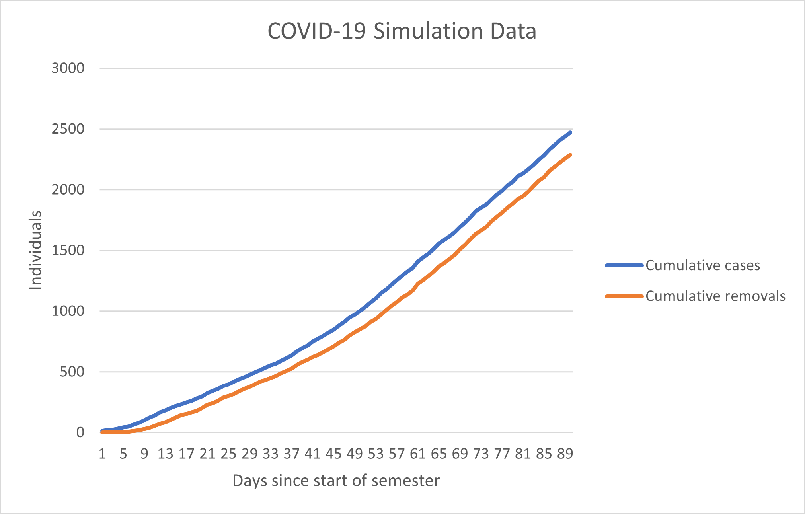

The basic premise behind this simulation is quite simple and is based in the SEIR model.
In the SEIR model, individuals go from being susceptible to exposed, infected and finally removed/recover.
My model uses a large undirected graph to model the interaction between individuals in each of these stages.
In theory, if we could generate a large matrix A such that A(i,j) = A(j,i) = the chance of infection between nodes i and j,
we can compute the vector multiplication of A by a column vector where each infected node is represented by a 1,
and the resultant vector would be the probability of infection for each node.
When algorithmically generating A, I tried to first use an approach that modeled concentric communities.
I defined likelihoods of spread for individuals living in the same room, floor and building
and I used available floor plans to approximate the shape of each building.
I couldn't find reliable data on Greek housing so I approximated the number of people living in each house.
The resulting matrix is 9056 x 9056, which is about accurate for the student population living on campus.
However, residence halls are not the only way that the disease can spread.
After generating the skeleton for our matrix, I pseudorandomly defined interpersonal communities.
These represent classes, clubs, or just going somewhere with friends.
The idea of distinct communities with links between them is often observed in real data
and is how the known "6 degrees of separation" works.
Finally, one additional row and column is added to the matrix. This node is connected to every node in the
network and represents the probability that someone is infected by an individual outside of the residence halls.
This node is always assumed to be positive.
Once A is generated, we compute the multiplication of Ax, where x is a vector with 0's representing healthy individuals
and 1's representing infectious individuals. This multiplication yields a vector of probabilities, where each
value is the probability of that node is infected. After some random number generation, we calculate our new x vector
Once nodes are infected, the removal code gets triggered. A pseudorandom number is generated representing testing/quarantine lag
and it counts down each day. When it hits 0 the node is removed.
The next steps for this project would be to allow for more dynamic shifting of the matrix A, but that has yet to be implemented.
Graph of simulated daily cases, daily recovered/quarantined individuals, and current active cases per day
Graph of cumulative cases and cumulative recovred/quarantined individuals.